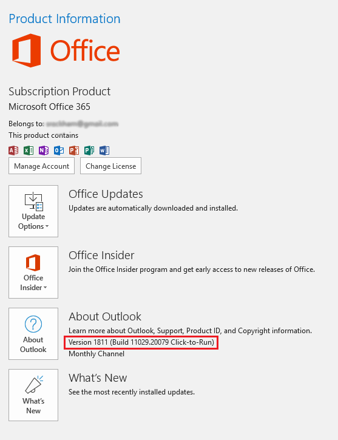
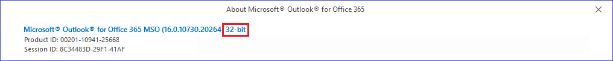

|
|
PRS News & Tips | December 2018 |
Microsoft Outlook 1811 integration issue
The Microsoft Office update released on 27-Nov-2018 (Version 1811 Build 11029.20079) introduced an incompatibility issue which can cause the PRS to randomly close.
Affected Outlook versions: 1811 and newer.
The symptoms:
-
The PRS closes at random times after sending an email from the PRS.
-
The PRS displays an error message when you run the PRS Tools→InBox Tool command and then the PRS closes when you dismiss the error.
We are working on a fix but in the mean time you will need to revert Microsoft Office to an Office release prior to 1811.
Here’s how to revert Microsoft Office 365:
|
Important
|
Before beginning check that you are running a 32-bit version of Microsoft Office. |
Steps to revert to Microsoft Office
-
Start Outlook.
-
Click File, and then click Office Account. You should see something like (you need to revert if the Version is 1811 or greater):
 -
In the Product Information column, click Update Options, and then click Disable Updates.
-
Make a note of the Update Channel. It’s immediately under the version number and will be either Monthly Channel or Semi-annual Channel.
-
Close all Office applications.
-
Open a Windows command prompt as administrator:
-
Click the Start button.
-
In the search box, type cmd.
-
Right-click on cmd.exe and choose Run as Administrator. If done properly, the below User Account Control window will appear.
-
Click Yes to run the Windows Command Prompt as Administrator.
-
-
Revert the Microsoft Office version. If you are on the Monthly Channel run this command from the Windows command prompt:
"C:\Program Files\Common Files\microsoft shared\ClickToRun\OfficeC2RClient.exe" /update user updatetoversion=16.0.11001.20108If you are on the Semi-annual Channel run this command from the Windows command prompt:
"C:\Program Files\Common Files\microsoft shared\ClickToRun\OfficeC2RClient.exe" /update user updatetoversion=16.0.10730.20264 -
Reboot your PC.
The PRS should now send mail without errors.
|
Note
|
You can only update MS Office with versions specific to your currently set Update Channel. See Update history for Office 365 ProPlus for Update Channel version numbers. If you try updating to a version not specific to your Update Channel then the MS Office updater throws Error Code 30125-27 (404) and the accompanying help is not helpful. |
32-bit Microsoft Office compatibility
You must use a 32-bit version of Microsoft Office to enable PRS integration with Microsoft Outlook.
To check you have 32-bit Microsoft Office installed:
-
Start Outlook.
-
Click File, and then click Office Account.
-
Press the About Outlook button. You should see something like:

If you have a 64-bit version you must first uninstall it before installing the 32-bit version.
After installing a 32-bit version you need to fix the Microsoft Outlook 1811 integration issue.
See also:
Newsletter back issues
See our Newsletter Archive for more or PRS Tips & Tricks.
Need help?
Our Support web page explains how to get answers to PRS questions and includes links to articles on Maintaining Database Reliability and Performance and PRS Best Practice Deployment.
|
Important
|
If you no longer wish to receive this newsletter please email support@prshq.com with the word UNSUBSCRIBE in the subject line. |